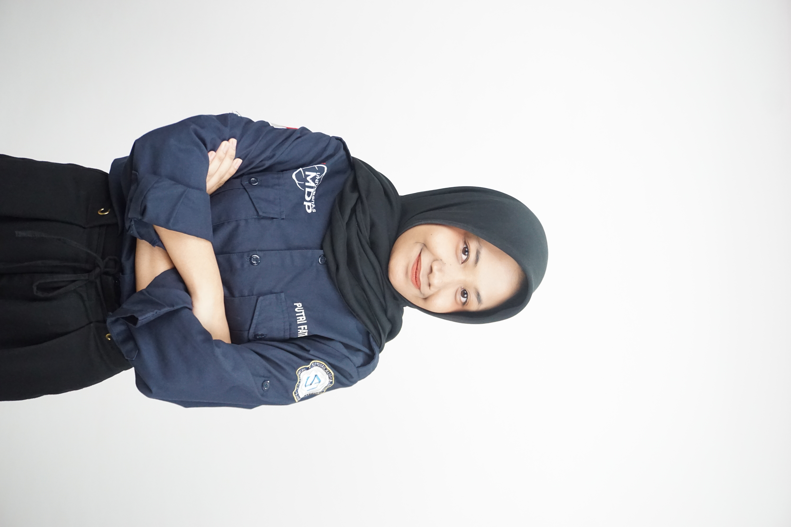
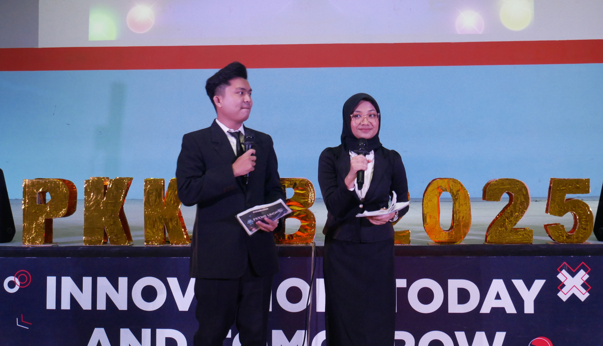
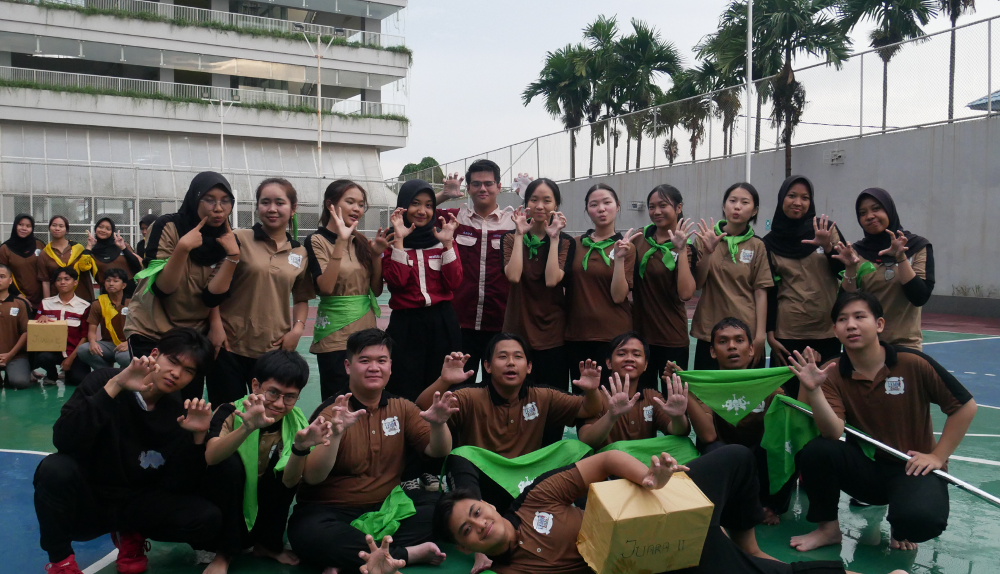
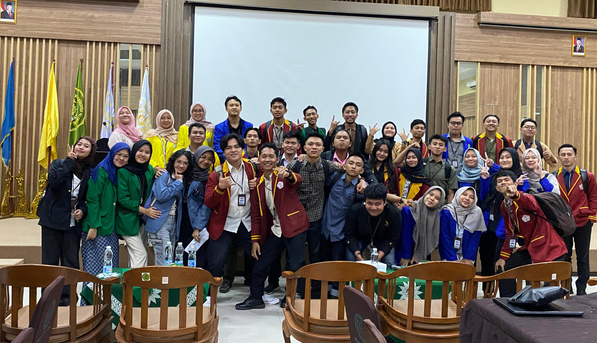
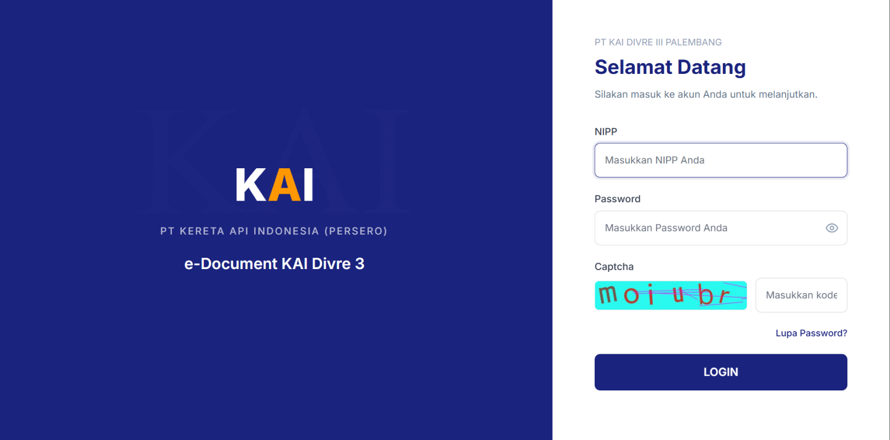
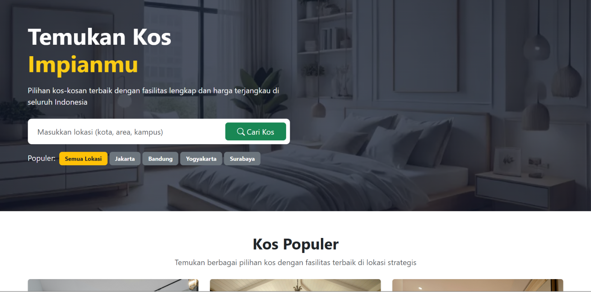

Putri Fathonah
Mahasiswi Sistem Informasi | Tech Enthusiast
Saya adalah mahasiswi Sistem Informasi yang memiliki minat besar pada bidang teknologi, pengembangan sistem, dan artificial intelligence. Saya senang mengeksplorasi ide, membangun solusi digital, serta terus mengembangkan diri melalui pengalaman organisasi, proyek, dan kolaborasi.

About Me
Tentang Saya
Halo! Saya Putri Fathonah, mahasiswi Sistem Informasi di Universitas Multi Data Palembang angkatan 2023 yang memiliki minat besar pada bidang teknologi dan artificial intelligence. Saya bercita-cita menjadi seorang Software Architect dan senang menggabungkan bisnis, teknologi, dan AI dalam berbagai proyek yang saya kerjakan. Bagi saya, teknologi bukan hanya tentang inovasi, tetapi juga tentang menciptakan solusi yang bermanfaat, relevan, dan berdampak positif bagi masyarakat.


Education
Pendidikan
Universitas Multi Data Palembang
S1 Sistem Informasi
Angkatan 2023 – Sekarang
Selama menempuh pendidikan, saya mempelajari berbagai bidang, seperti analisis sistem, pengembangan perangkat lunak, basis data, dan manajemen proyek teknologi informasi, serta penerapan teknologi untuk mendukung kebutuhan bisnis dan masyarakat. Selain itu, saya juga aktif mengikuti berbagai proyek dan kegiatan organisasi sebagai sarana untuk mengembangkan kemampuan, menambah pengalaman, dan memperluas wawasan saya.
Organization
Pengalaman Organisasi
Himpunan Mahasiswa Sistem Informasi
Sekretaris Umum
2025 – 2026
Bertanggung jawab dalam mengelola administrasi organisasi secara menyeluruh, termasuk pengelolaan surat masuk dan surat keluar dengan total lebih dari 150 dokumen. Selain itu, turut menyusun notulen rapat, mendokumentasikan arsip organisasi, membantu koordinasi antar divisi, serta memastikan alur komunikasi internal berjalan dengan tertib, efektif, dan terstruktur. Di HIMSI, juga aktif berpartisipasi dalam kegiatan KSI 2025 sebagai Koordinator Mentor, dengan tanggung jawab mengoordinasikan mentor yang terbagi ke dalam 8 tim guna memastikan proses pendampingan berjalan optimal, terarah, dan kondusif. Tidak hanya itu, saya juga terlibat dalam berbagai kegiatan program kerja lainnya sebagai bentuk kontribusi aktif dalam mendukung kelancaran dan keberhasilan agenda organisasi.
Senat Mahasiswa
Kepala Departemen Seni dan Ormawa
2025 – 2026
Berperan dalam mendukung perkembangan unit kegiatan mahasiswa dan menjadi penghubung antara organisasi mahasiswa dengan pihak terkait. Selallu memantau untuk kegiatan yang terjadi di UKM, membantu memberi saran pengembangan kegiatan seni dan organisasi kemahasiswaan, serta mendorong kolaborasi agar kegiatan mahasiswa berjalan lebih aktif, kreatif, dan terarah.
Experience
Pengalaman

Master of Ceremony — PKKMB 2025
Berperan sebagai Master of Ceremony (MC) PKKMB 2025 selama 3 hari penuh dengan memandu rangkaian acara secara komunikatif, interaktif, dan terstruktur. Bertanggung jawab menjaga kelancaran acara, membangun suasana yang positif, serta memastikan keterlibatan audiens. Pengalaman ini mengasah kemampuan public speaking, komunikasi, adaptasi, dan kepercayaan diri di hadapan audiens yang beragam.
Sekretaris Umum dan Mentor — LKMM UMDP 2025
Berperan sebagai Sekretaris Umum sekaligus Mentor dalam LKMM UMDP 2025 dengan tanggung jawab pada administrasi kegiatan, penyusunan dokumen, dan pendampingan peserta. Sebagai mentor, berhasil membimbing peserta hingga meraih Juara 2, sehingga pengalaman ini mengasah kemampuan manajemen, komunikasi, kepemimpinan, dan pendampingan tim.


Peserta — LKMM TM
Mengikuti LKMM TM sebagai wadah pengembangan diri di bidang kepemimpinan, organisasi, dan kolaborasi. Dalam kegiatan ini, saya bersama tim yang terdiri dari 7 peserta dari berbagai kampus menyusun solusi inovatif untuk studi kasus organisasi berdasarkan riset penelitian terdahulu. Pengalaman ini mengasah kemampuan saya dalam kerja sama tim, komunikasi, analisis masalah, dan penyusunan strategi solusi.
Projects
Proyek

Pengembangan Aplikasi Website pada Instansi BUMN
Dalam kegiatan magang di salah satu instansi BUMN, saya terlibat dalam pengembangan aplikasi berbasis website untuk mendukung kebutuhan sistem informasi. Pada proyek ini, saya berkontribusi dalam proses perancangan fitur, pengembangan antarmuka, serta implementasi sistem menggunakan Laravel dan teknologi web lainnya. Pengalaman ini membantu saya memahami alur pengembangan aplikasi secara nyata, mulai dari analisis kebutuhan hingga implementasi sistem.

Website Pengelolaan Penginapan Kost
Bersama tim, saya mengembangkan website pengelolaan kost yang dirancang untuk membantu mahasiswa mencari kost dekat kampus dengan lebih mudah dan efisien. Website ini menyediakan pencarian kost berdasarkan wilayah/lokasi, sehingga pengguna dapat menyesuaikan pilihan hunian sesuai kebutuhan. Selain itu, platform ini juga menyajikan informasi kost secara lebih jelas dan terstruktur, mulai dari fasilitas, detail kamar, hingga informasi pendukung lainnya. Melalui proyek ini, saya dan tim berupaya menghadirkan solusi digital yang fungsional, efisien, dan mudah digunakan, sekaligus memberikan kemudahan dalam pengelolaan data dan pencarian tempat tinggal.
Skills